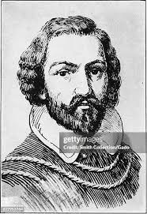

| Rodriguez Empire | |
Navigation |
Meet Our Visionary FounderMr. Alejandro Rodriguez, the founder and chief strategist of Rodriguez Empire, is a name synonymous with financial acumen and market foresight. With over two decades of experience in the stock market, Mr. Rodriguez started this firm with a single vision: to build an empire of financially independent individuals. His journey began from a small office in Panjim, and through sheer dedication and an unparalleled understanding of market dynamics, he has guided countless clients towards prosperity. He believes in a hands-on approach, often personally mentoring new investors and sharing his wealth of knowledge. A Word from the Founder"Success in the market isn't about timing; it's about time and temperament. We are not just building portfolios; we are building legacies. Welcome to the family." Founder's Introduction VideoWatch this short video where Mr. Rodriguez shares his philosophy and his vision for the future of investing. |
| Copyright © 2025 Rodriguez Empire. All Rights Reserved. | |